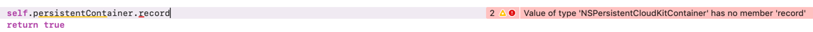
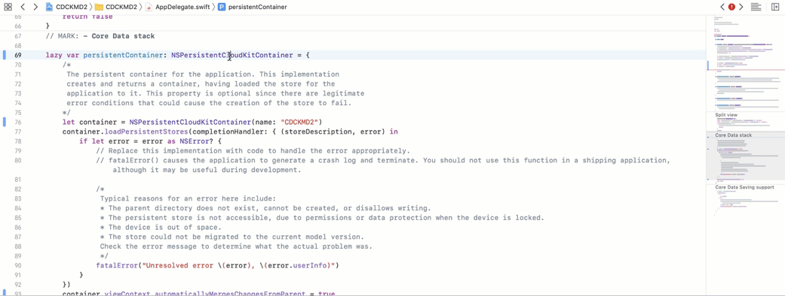
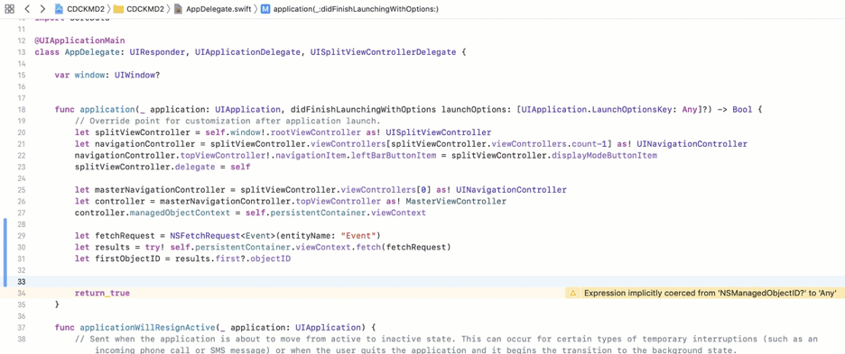

I've created courses on Core Data, CloudKit, and the Big Picture of Data Persistence on iOS for Pluralsight.
Deepen your understanding by checking them out!
NSPersistentCloudKitContainer Buggy Behavior List
NSPersistentCloudKitContainer is brand new with Xcode 11 and iOS 13.
It works… kind of… sometimes…
I’m keeping this list of buggy behavior to help keep my head straight. I’ve also filed bug reports on each.
Hopefully others in the iOS community who are experimenting with NSPersistentCloudKitContainer can confirm or deny these same oddities. If they’re fixed in a subsequent beta, I’ll come back here and note it!
Enabling CloudKit doesn’t create a default container
In Xcode 11 Beta 3, adding the iCloud capability and clicking the CloudKit checkbox is not automatically creating a default container for new apps that I’m testing…
Existing data doesn’t sync
Suppose that…
- You have an existing Core Data app
- The app is installed on two devices with the same user signed in to iCloud
- Data has been saved independently on both devices
Now suppose that you want to take advantage of the automagic syncing offered with NSPersistendCloudKitContainer.
If you…
- Set up your app to work with
NSPersistentCloudKitContainer - Rebuild your app and install it on both devices
- Launch the app on both devices…
You might expect the existing data to show up on both devices. It doesn’t.
If you add new data on one device, only the new data that gets saved after the NSPersistentCloudKitContainer conversion gets synced. Existing data never does.
🤷🏼♂️
Data only syncs after you close and re-launch your app
I really thought I had this figured out. Beta 3 has proved me wrong.
In Beta 2, simply setting automaticallyMergesChangesFromParent on the container’s viewContext to true seemed to work.
Not with Beta 3.
You can save new data and wait (and wait… and wait…). It doesn’t show up in the UI until after you re-launch the app.
Here’s what I’m experiencing:
Record accessor methods missing in Xcode
“On my machine”, attempting to use the record(for:) methods on NSPersistentCloudKitContainer produce the following error message:
Value of type ‘NSPersistentCloudKitContainer’ has no member ‘record’

I can “Jump to definition” and the methods appear to be there…

Attempting to use the function in code doesn’t work…

comments powered by Disqus